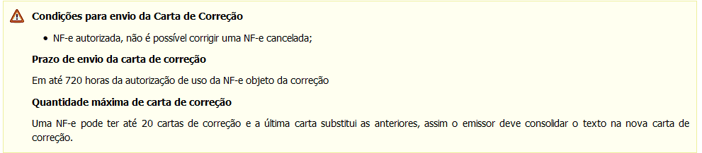
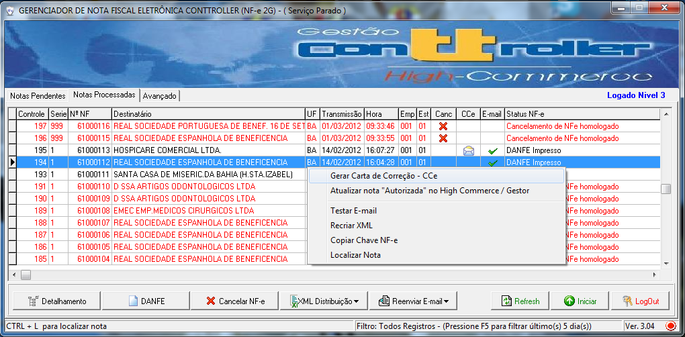
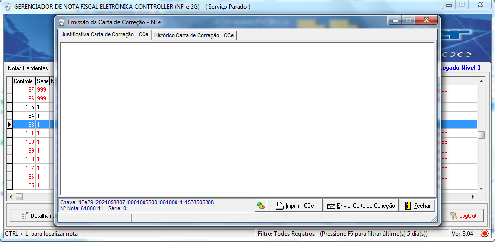
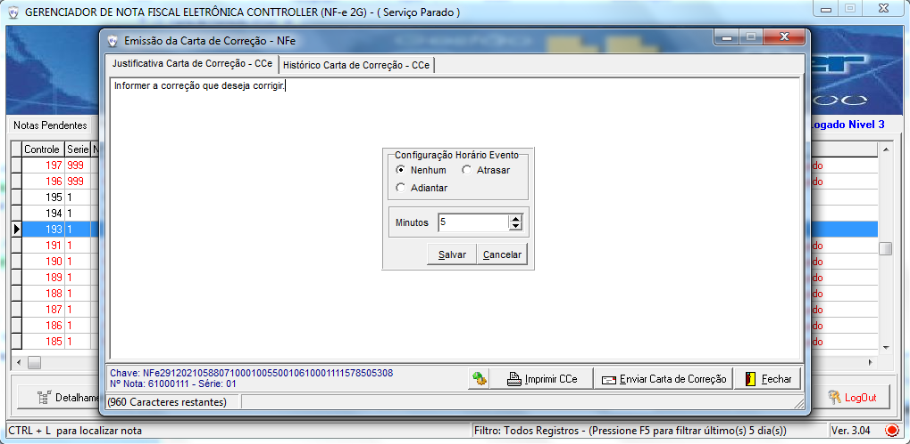
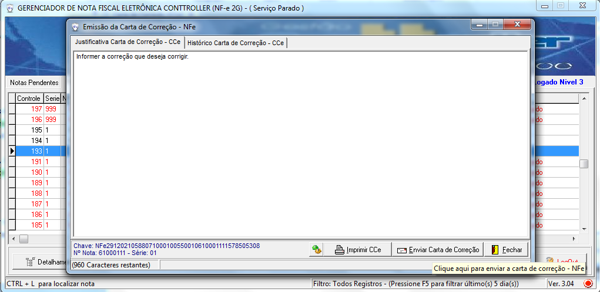
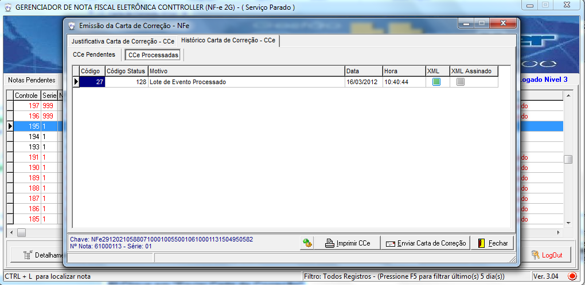
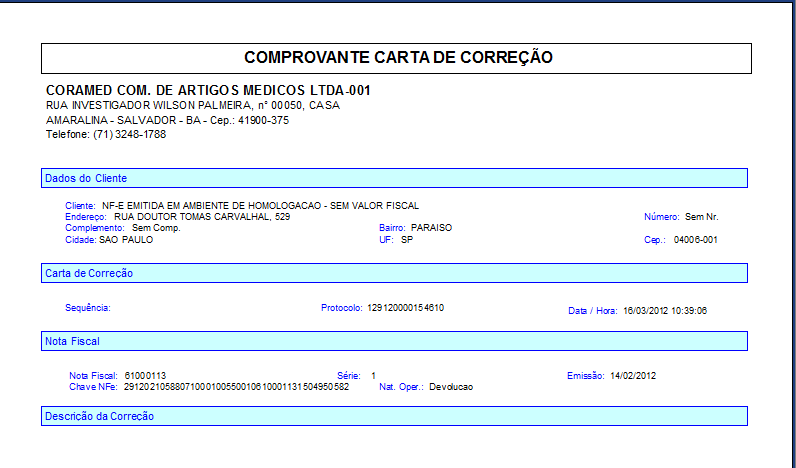

Carta de Correção (CCe) |
  
|
Carta de Correção (CCe) |
|
Descrição:
Funcionalidade para Cancelamento de NF-e.
Os principais parâmetros da carta de correção são:
● chave de acesso da NF-e objeto da correção;
● data da correção;
● seqüencial da correção (1 a 20), a última correção deve substituir a correção anterior;
● texto da correção, texto livre com tamanho limitado a 1000 caracteres;
● indicador de texto acentuado.
A carta de correção deve ser enviada para a SEFAZ que autorizou a NF-e objeto de correção, a identificação do WS de acessado deverá ser informada no parâmetro sigla WS.
Os emissores localizados em UF usuárias da SEFAZ Virtual devem informar a sigla SVAN (ES, MA, PA, PI e RN) ou a sigla SVRS (AC, AL, AP, DF, PB, RJ, RO, RR, SC, SE e TO), ou informar a sigla da UF (AM, BA, CE, GO, MS, MT, MG, PE, PR, RS e SP) nos casos de UF que tenham aplicação própria. Em caso de emissão em contingência SCAN - Sistema de Contingência do Ambiente Nacional, informar a sigla SCAN.

1º Selecione a NFe com Botão direito do Mouse

2º Selecione a opção "Gerar Carta de Correção - CCe

3º Digite o texto com a informação que deseja corrigir.

4º Informe o horário do evento Adiantar/Atrasar

5º Clique em "Enviar Carta de Correção"

6º Após a transmissão é possível consultar a(s) CCe e solicitar sua impressão.
